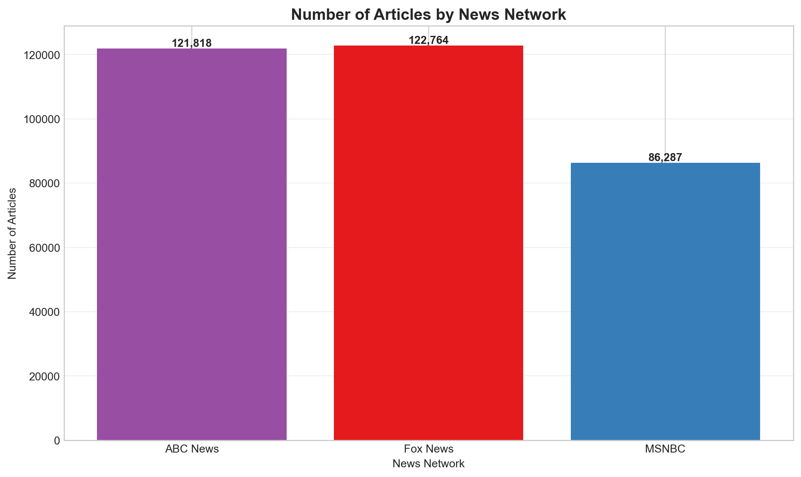
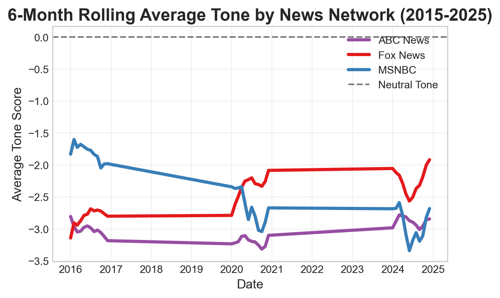

Number of Articles Analyzed by Network:network
ABC News 121818
Fox News 122764
MSNBC 86287
dtype: int64

This section examines long-term sentiment trends across three major news networks (Fox News, MSNBC, and ABC News) using GDELT tone scores from 2015 to 2025. We analyze how tone varies over time, especially during key periods like elections and major events.
Before diving into the analysis, it’s important to understand how GDELT tone scores are calculated:
Higher tone scores indicate more positive language, while lower scores indicate more negative language. These scores help us quantify and compare sentiment across different news sources over time.
First, let’s examine the number of articles analyzed per network:
Number of Articles Analyzed by Network:network
ABC News 121818
Fox News 122764
MSNBC 86287
dtype: int64Note on Sample Sizes: The data shows a smaller sample for MSNBC compared to Fox News and ABC News. These differences reflect availability via GDELT’s API. This discrepancy should be considered when interpreting results, as it may impact the representativeness of trends for MSNBC.
Let’s examine how tone scores are distributed across the three networks:
All networks skew slightly negative, with Fox News averaging –2.69, MSNBC –2.74, and ABC News –3.10. While the general shape of the distributions is similar, ABC News has a slightly more negative average and wider spread, suggesting a greater variability in tone across its coverage. The dashed line at 0 represents a neutral tone.
All three networks center below the neutral tone line, reflecting a general trend toward negative coverage. Fox and ABC News display slightly tighter interquartile ranges, while MSNBC shows more outliers on both the positive and negative ends. ABC News appears to have the most extreme negative outliers, with some scores dipping below –40.
The following visualization tracks monthly average tone scores across the three networks over time:
For a clearer view of long-term trends, here’s a 6-month rolling average of tone scores:
# Convert month period to datetime for rolling calculation
# Convert month period to datetime for rolling calculation
monthly_tone_reset = monthly_tone.reset_index()
monthly_tone_reset['month_datetime'] = monthly_tone_reset['month'].dt.to_timestamp()
monthly_tone_reset = monthly_tone_reset.set_index('month_datetime')
# Calculate 6-month rolling average
rolling_window = 6
rolling_tone = monthly_tone_reset.drop('month', axis=1).rolling(window=rolling_window, min_periods=1).mean()
# Plot rolling average trends
plt.figure(figsize=(6, 4))
# Plot lines for each network
for column in rolling_tone.columns:
plt.plot(rolling_tone.index, rolling_tone[column],
linewidth=3, label=column, color=NETWORK_COLORS[column])
# Removed event annotations
# Removed shaded election years
# Add neutral line
plt.axhline(y=0, color='black', linestyle='--', alpha=0.5, label='Neutral Tone')
# Customize the plot
plt.title(f'{rolling_window}-Month Rolling Average Tone by News Network (2015-2025)', fontsize=16, fontweight='bold')
plt.xlabel('Date', fontsize=12)
plt.ylabel('Average Tone Score', fontsize=12)
plt.grid(alpha=0.3)
plt.legend(loc='best')
# Format x-axis to show years
plt.gca().xaxis.set_major_formatter(mdates.DateFormatter('%Y'))
plt.gca().xaxis.set_major_locator(mdates.YearLocator())
plt.tight_layout()
plt.show()
This smoothed trendline shows how average tone evolved over time for each network using GDELT data. Fox News (red) exhibits a notable upward trend in tone starting around 2023, while MSNBC (blue) shows more volatility with several peaks and sharp declines across the decade. ABC News (purple) remains relatively steady with consistently negative tone scores.
Let’s examine how tone volatility (measured by standard deviation) differs across networks:
This line plot tracks the standard deviation of tone scores by year for each network, offering a view into how volatile or stable their coverage was. MSNBC (blue) shows the highest variability, peaking in 2020, which coincides with major societal events. Fox News (red) displays a steady decline in volatility after 2018, suggesting more consistent tone in recent years. ABC News (purple) remains relatively stable throughout the decade.
This visualization shows tone patterns over time in a heatmap format:
Darker blue tones represent more negative sentiment, while lighter shades and reds indicate more positive coverage. Across all three networks, most months and years exhibit consistently negative tone, reflecting the overall pessimistic framing of news coverage in this period. MSNBC shows greater variability between years, especially around 2016–2018, while Fox News trends sharply more positive in early 2025. ABC News remains steadily negative with minimal monthly fluctuation. This format makes it easy to spot brief tonal shifts against a predominantly negative backdrop.
To better understand the composition of tone scores, let’s analyze the positive and negative components separately:
Across all three networks, negative scores are significantly higher than positive ones, reinforcing the trend of predominantly negative news coverage observed elsewhere in the dataset. Fox News and ABC News have slightly higher average positive scores than MSNBC, but the gap between positive and negative sentiment is consistently large across the board. This highlights how negative language tends to dominate regardless of network affiliation.
| Mean Tone | Median Tone | Tone Std Dev | Min Tone | Max Tone | Mean Positive Score | Mean Negative Score | |
|---|---|---|---|---|---|---|---|
| network | |||||||
| ABC News | -3.10 | -2.85 | 4.04 | -47.37 | 23.81 | 2.23 | 5.33 |
| Fox News | -2.69 | -2.52 | 3.76 | -32.14 | 20.00 | 2.34 | 5.03 |
| MSNBC | -2.74 | -2.52 | 4.06 | -27.78 | 20.59 | 2.26 | 5.00 |
Statistical Significance Testing (t-test for tone differences):| Comparison | t-statistic | p-value | Significant | |
|---|---|---|---|---|
| 0 | Fox News vs ABC News | 25.9065 | 0.0000 | Yes |
| 1 | Fox News vs MSNBC | 2.9581 | 0.0031 | Yes |
| 2 | ABC News vs MSNBC | -19.8019 | 0.0000 | Yes |
This table summarizes results from t-tests comparing average tone scores between each pair of networks. All comparisons are statistically significant at p < 0.01, confirming meaningful differences in tone across outlets. The largest difference is between Fox News and ABC News, followed by ABC News vs. MSNBC. Even the more modest difference between Fox News and MSNBC is statistically significant.